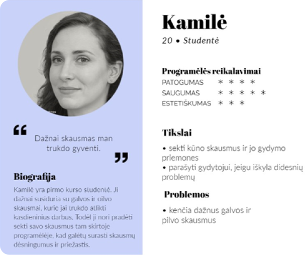
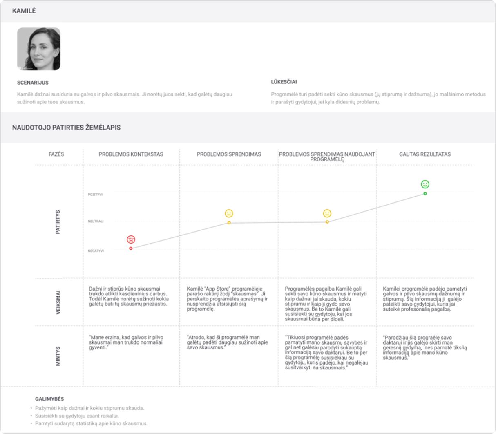
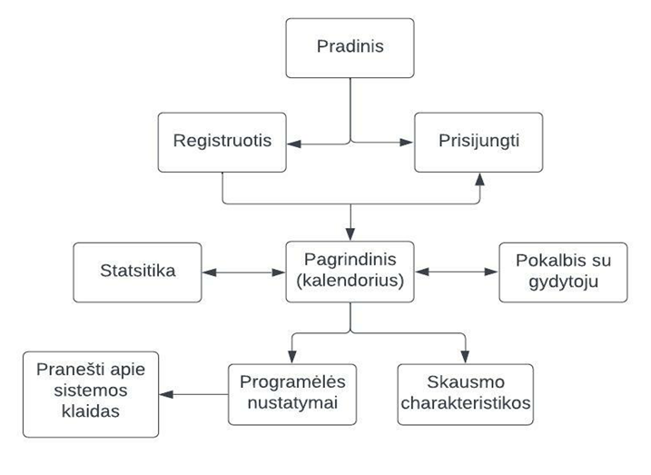
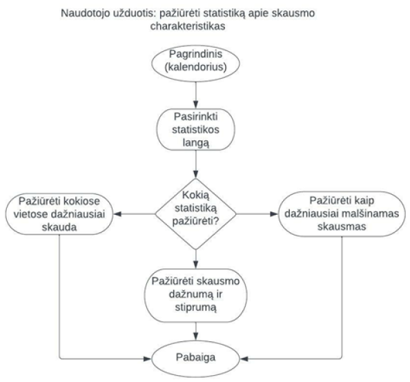

Šis projektas buvo sukurtas kaip žmogaus ir kompiuterio sąveikos studijų dalyko užduotis. Buvo sukurta programėlė, kurios tikslas – padėti vartotojams fiksuoti, stebėti ir analizuoti kasdienius skausmus, ypač žmonėms, gyvenantiems su lėtiniais skausmais, ir tiems, kurie nori turėti aiškią skausmo istoriją konsultacijoms su gydytojais. Pagrindinis projekto tikslas – sukurti patogią, intuityvią mobiliąją programėlę, kuria būtų lengva naudotis ir ji galėtų padėtų vartotojams stebėti vieną iš jų sveikatos sričių. Siekiant įgyvendinti projekto tikslus, buvo naudojami įrankiai, tokie kaip LucidChart (diagramų kūrimui) ir Figma (dizainui ir prototipų kūrimui).
Atliekant projekto tiriamąją dalį, buvo išanalizuoti galimi programėlės vartotojų tipai, jų poreikiai, naudojimo kontekstai ir įpročiai. Taip pat atlikta konkurentų analizė, kurioje vertintos panašios rinkoje esančios programėlės. Analizė atskleidė, kad dauguma esamų sprendimų yra anglų kalba ir nėra prieinami nemokamai.

Personos analizė

Naudotojo kelionės žemėlapis

Site Map diagrama

User Flow diagrama
Projekto dizaino dalyje buvo sukurti keli naudotojo kelionės žemėlapiai (User Journey) remiantis suadrytomis personomis iš galimų vartotojų interviu, aprašantys skirtingų naudotojų sąveiką su programėle. Taip pat buvo sudarytos User Flow ir Site Map diagramos, kurios padėjo išsiaiškinti galimus veiksmus programėleje. Tuomet buvo kuriami vieliniai karkasai (wireframes), apimantys pagrindinius ekranus: prisijungimo, pagrindinį, skausmo registravimo, kalendoriaus ir statistikos. Pagal vielinį karkasą buvo sudėtas galutinis dizainas, kuriame akcentuotas aiškumas ir minimalizmas. Taip pat sukurtas interaktyvus prototipas, kuris leidžia ištestuoti naudotojo sąveiką.
Projekto pabaigoje parengtas veikiantis programėlės prototipas, kuriame vartotojai gali užregistruoti skausmo epizodą, pasirinkti vietą, intensyvumą, trukmę bei pridėti komentarų. Prototipas yra lietuvių kalba ir paruoštas tolesniam tobulinimui ar testavimui su realiais naudotojais. Projektas padėjo pritaikyti naudotojo patirties (UX) principus kuriant prasmingą ir reikalingą skaitmeninį sprendimą.